第三篇 · 运行时内存与对象模型
第 12 章 元空间与本地内存管理
堆外空间通常由一个堆内对象或运行时结构代表。找到这个代表之后，还要继续追问谁持有它、谁真正拥有释放责任、何时触发释放，以及统计工具到底看到了哪一层。
保留一字节，也能保留八兆内容
本章从一个8兆二进制字节（mebibyte，MiB）的直接缓冲区取得1字节切片，随后只保留切片。本轮直接池统计仍显示容量8,388,608字节。切片小，不代表底层拥有的资源也小；与堆中对象图相似，资源账单必须沿持有链追到真实分配。
技术基线为Java开发工具包（Java Development Kit，JDK）25.0.5.0.2、HotSpot、macOS AArch64。前置为加载器与元数据、进程账本、分配和构造。本章并行放入少量加载器、线程与一块显式关闭的外部内存，观察同一进程的三个有界阶段；不主动制造泄漏或资源耗尽。
12.1 元空间分配与回收
12.1.1 加载器生命期组织元数据分配
普通类的元数据与定义加载器生命期关联，类加载器数据（Class Loader Data，CLD）通过ClassLoaderMetaspace组织分配。启用压缩类型指针时，Klass等需要满足编码地址约束的结构与其他元数据使用不同分配空间；这不是把每个Class镜像也搬到类空间。ClassLoaderMetaspace使用适当的MetaspaceArena，后者从共享块管理器取得并管理块，多个类型的小分配可以落在相同分配单元中。
因此，新增一个类不仅有类本身的数据，还可能引起块申请、对齐、管理结构与共享表变化。工具里的ChunkSz与BlockSz分别代表已分配块容量和块内使用，不能都当作类文件大小，也不能将两者再次相加。非强隐藏类还有第8章说明的独立持有关系，不能简单说一个加载器永远只对应一种卸载单元。S01

12.1.2 卸载、复用与归还系统分三步看
类型具备卸载条件后，还需收集器执行相应判定和清理。锁定MetaspaceArena析构把所属块交还ChunkManager；后者可合并相邻伙伴块并加入空闲管理结构。到这一层，空间已可被其他元数据分配复用，但仍可能保持提交。另一个回收流程按提交粒度取消提交可释放的空闲块，最终由VirtualSpaceNode调用操作系统接口。
当前实现的提交粒度与碎片使“释放一份元数据”不必刚好释放一页；稀疏存活的块、共享管理和预留地址又可能形成高水位现象。本轮24个Disposable确有卸载日志，收集事件中的元空间used由1343K降到1310K，提交从1600K降到1536K；释放后本地内存跟踪（Native Memory Tracking，NMT）的Metaspace类别提交仍比初始基线多394KB。新增JDK类、管理结构和统计时点继续影响全局总量，不能用差值倒算这24类的独占占用。
12.2 运行时内部内存成本
12.2.1 堆之外还有执行和管理的空间
平台线程需要本地栈和运行时线程结构；方法编译产生代码缓存内容，编译过程又需要工作空间；符号、模块、句柄、同步结构及服务性工具各有成本。收集器还需要位图、队列及记忆关系等辅助空间。它们与对象的已用堆不是同一个账目，即使没有业务本地库，也不会凭空消失。
线程数增加可能同时扩大栈预留和已经触碰的页，类数增加可能伴随元数据与解析缓存，编译活动可能产生短峰值和稳定代码占用。不同收集器的辅助结构随堆大小与区域组织变化。不能把各项成本都设成与-Xmx无关的固定常数，也不能把线程栈上限直接乘线程数当作当前驻留。S02
12.2.2 用活动解释差异，不用差异臆测活动
本轮4个教学工作线程在持有阶段确实存在，线程转储显示它们限时停放在同一CountDownLatch。NMT Thread计数比基线多4，栈预留多2048KB，与显式-Xss512k和线程数相符；栈提交增量只有320KB。这里比较的是NMT所跟踪栈，不是4个线程各实际吃满512KB。
释放后教学线程退出，Java管理接口活线程数从11回到7，但NMT线程计数为19，仍比初始多1，栈预留也没有机械回到旧值。运行时后台活动、观测和分配策略仍可能变化；本章不凭一份差异表指定唯一原因。不同工具统计的“线程数”覆盖范围也不同：Java管理接口与包含运行时线程的NMT不能逐项强行对齐。
12.3 直接缓冲区与本地分配
12.3.1 包装、视图与拥有者
普通堆内缓冲区持有堆数组；直接缓冲区的Java包装对象仍在堆中，内容块可以来自本地分配。锁定Direct-X-Buffer模板的拥有者构造器先调用Bits.reserveMemory，再用Unsafe申请并清零本地空间，登记清理动作；分配或清理登记失败时回退释放。Deallocator记录真正的基址、大小和容量，执行freeMemory并更新Bits计数。
切片不重新申请同样的底层块。视图构造器根据原缓冲区地址加偏移定位，自己没有独立清理器，att指向拥有者或已有attachment，以免视图还被使用时底层空间提前释放。只留下view.capacity()==1，仍可沿att保持拥有者与完整8MiB资源。S03

12.3.2 缓存和异步持有会延长整个资源的生命期
切片若进入长期缓存，底层块也会随之保留；一个异步操作若还借用这段空间，必须让拥有者在操作完成前存活。释放时既要防止过早使用失效，也要在借用结束后清除不必要持有。Java本地接口（Java Native Interface，JNI）的强引用或本地库自身缓存可能形成额外链条，不能只在Java堆中找一个名为owner的变量。
Bits的MaxDirectMemorySize约束针对登记的总容量，实际本地申请大小可能因页面对齐不同而变化。管理接口分别给出数量、容量与内存，三个值不应混为一谈；任意本地库的malloc也不自动计入这个直接池上限。本章显式设置上限16MiB，只分配8MiB，未触发限制。
12.4 本地内存跟踪
12.4.1 同一基线串联三个阶段
NMT从启动选择summary或detail。前者给用途汇总，后者增加分配位置等细节；运行时不能把一次没启用的历史申请补成完整跟踪。先记录稳定阶段的baseline，再对同一基线查询summary.diff，才能明确“变化相对于哪里”。锁定NMTDCmd会检查跟踪级别和基线存在，串行执行查询，并把早期与当前MemBaseline交给差异报告器。S04
本轮程序的阶段是基线45秒、持有45秒、释放请求后45秒。三次外部快照起止分别为13:20:14—15、13:21:12—13、13:22:04—05，均落在各自程序日志确认的窗口内。首轮15秒窗口曾采晚，原记录保留为不足证据，不拿来替代本轮。
| 指标 | 基线 | 持有 | 释放后 |
|---|---|---|---|
| 直接池容量，字节 | 0 | 8388608 | 0 |
| NMT Other提交，KB | 低于显示阈值 | 8450 | 2 |
| 堆used，K | 3894 | 6270 | 1797 |
| ps 驻留集大小（Resident Set Size，RSS），1024字节单位 | 56352 | 67648 | 67712 |
| vmmap physical footprint，原单位M | 35.0 | 39.0 | 35.3 |
持有时8450KB的Other增量与8MiB直接内容、256千二进制字节（kibibyte，KiB）外部块等相符，但类别里还有其他小申请。直接池只覆盖其中8MiB；不能把Other整体命名成“直接内存”。两次diff均相对同一个初始基线，不能把第二次显示的“+2KB”误读为又在8450KB上增加2KB。

12.4.2 申请账不能替代驻留账
NMT跟踪HotSpot路径申请和预留／提交，操作系统工具观察映射、页面和自身的共享归账。HotSpot知道一块空间已释放，不代表底层分配器立刻把相应页面退回系统，也不代表其他区域同时没有增长。本轮Other显著下降而RSS略升，vmmap footprint却下降；这不是靠统一单位就能消除的矛盾，而是范围与口径不同。不能据此宣称已证明某个具体分配器缓存机制，更不能据RSS未降就否定本地释放。
NMT并不覆盖所有第三方本地分配。堆稳定而RSS增加时，应收集同阶段NMT差异、线程、类与编译活动、直接池、进程映射及本地库自身的分配证据；若NMT解释不了，未覆盖路径就是调查方向之一，而不是立即宣判工具错误。先核对覆盖范围和采样条件，再考虑更具侵入性的本地工具。
12.5 释放策略与泄漏
12.5.1 关闭、清理与退出提供不同保证
本章用线程受限的Arena管理256KiB外部块，在try-with-resources退出时显式close：正常与异常路径都回到资源所有者，成功关闭会结束其内存段生命期。相反，普通allocateDirect包装没有同样的公共close协议；本例只丢弃切片引用，让回收与清理路径接续。本轮确实观察到直接池归零，但“最终可清理”不能写成任意时刻都会及时释放。S05
Cleaner提供清理登记与至多一次动作协议，清理状态若反向强持有被登记对象，会阻止自动触发。直接缓冲区的当前实现使用内部清理路径，不能不加说明地等同所有公共Cleaner实现细节；共同要点是持有和触发必须正确。进程退出由系统收回地址空间，不等于应用清理回调总会执行，也不能代替长进程中的及时释放。
12.5.2 按拥有者、持有者与触发点寻找泄漏
为每块资源建立三项事实：谁申请并负责释放，哪些对象／线程／本地句柄仍在借用，什么事件触发close或清理。若职责已经结束而某个长期缓存仍保持切片，根因是持有链没有按生命期断开；若所有引用已消失但清理异步尚未执行，则还要研究调度与清理能力，不能把两种情况混称为同一泄漏。
加载器的文件资源关闭也不代表类型卸载。本例在每次构造实例时就关闭URLClassLoader的文件资源，但保留实例使类型／加载器继续存活；释放实例列表后才在本轮收集中看到24次目标卸载。线程的取消请求与实际退出同样要分开；本例先打开停止闩锁，再有界join，线程自身另有90秒等待上限。第32章将进一步讨论外部内存、回调与本地边界，第35章再以完整故障记录分析泄漏。
本轮证据与源码怎样对应
NativeJourney的源阅读页包含主源及明确复用的Disposable。运行说明列出隔离编译、135秒观察上限、全部采集命令与退出办法。本轮记录保存有效阶段、输入摘要、三类统计、24次卸载与正常退出；程序没有后台目标遗留。
沿ClassLoaderMetaspace→MetaspaceArena→ChunkManager→VirtualSpaceNode可看到分配、归还块和取消提交的不同层次；沿DirectBuffer拥有者→Deallocator与视图attachment可找到真实释放责任；NMTDCmd则解释baseline与diff的语义。三条路线共同把对象持有、资源申请和工具计量连接起来，不以一次RSS变化替代全部机制。
回顾与第三篇问题
- 如何估算一个对象及其关联图的空间？先按第10章配置计算浅大小，再对共享引用去重；直接切片还要越过包装对象追到真实本地拥有者。
- 分配、构造、发布、回收分别意味着什么？第11章区分空间／表示建立、用户状态、跨线程同步和收集资格；本章再区分元数据卸载、内部复用与系统页面归还。
- 堆稳定而进程占用增长，应先收什么？第9章先固定口径与窗口，本章再按NMT、线程、类、代码、直接池、系统映射及未覆盖本地分配逐项建立候选解释。
继续思考：为什么一个1字节切片能改变整个8MiB块的寿命？为什么24次卸载不保证元空间回到启动值？为什么成功close后RSS仍可暂时不降？第四篇将转向执行引擎，解释栈帧、调用和编译怎样改变这些对象的实际运行形态。
来源与材料
- S01：锁定ClassLoaderMetaspace、MetaspaceArena析构、ChunkManager块合并／purge与VirtualSpaceNode::uncommit_range；路径和符号索引。
- S02：锁定NMT用途分类及本轮线程／类／堆／进程数据；第9章统计边界。
- S03：锁定Direct-X-Buffer.java.template拥有者／视图构造、Deallocator、Bits.reserveMemory／unreserveMemory及ByteBuffer契约。
- S04：JDK25 NMT说明与锁定nmt/nmtDCmd.cpp；实际基线与差异见运行记录。
- S05：Arena生命期契约、Cleaner登记与触发契约，本轮仅正常关闭／回收请求，没有访问失效内存。